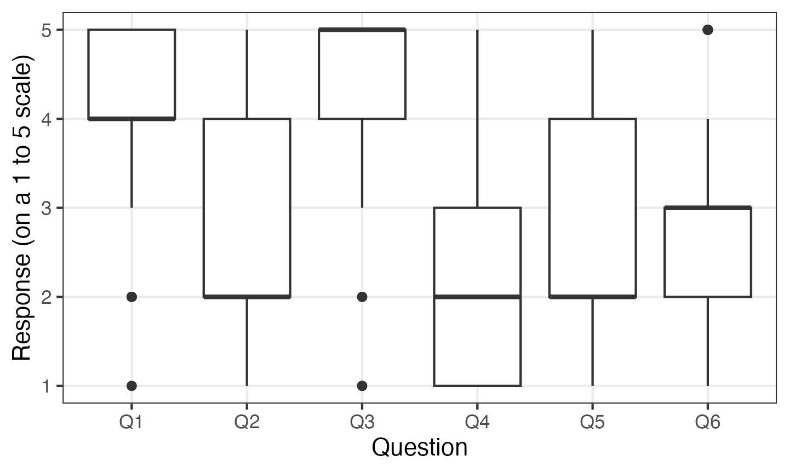

Plotting multiple variables at once using ggplot2 and tidyr
r
ggplot
Author
Cameron Patrick
Published
November 26, 2019
In exploratory data analysis, it’s common to want to make similar plots of a number of variables at once. For example, a randomised trial may look at several outcomes, or a survey may have a large number of questions. Here is a way to achieve to plot them efficiently using R and ggplot2.
Pivoting longer: turning your variables into rows
ggplot2 doesn’t provide an easy facility to plot multiple variables at once because this is usually a sign that your data is not “tidy”. For example, in situations where you want to plot two columns on a graph as points with different colours, the two columns often really represent the same variable, and there is a hidden grouping factor which distinguishes the data points you want to colour differently. The usual answer in this scenario is that you should restructure your data before plotting it. As a bonus, it will probably be easier to analyse your data in that form too.
Likewise, if you want to split a plot into panels (or facets, in ggplot2-speak), you must plot a single response variable, with a grouping variable to indicate which panel the data should be plotted in. The best structure for your data depends on what you’re trying to do with it, and in this situation, even if your data is in the right form for analysis, it may not be right for some of the plots you want to make.
Fortunately, restructuring your data into the right form is straightforward using the tidyr package and the pivot_longer() function. In this example, I’m going to look at some mocked-up survey data, with six questions stored in variables Q1 through Q6. The original data frame looks like this:
print(survey_data)
# A tibble: 300 × 7
group Q1 Q2 Q3 Q4 Q5 Q6
<fct> <int> <int> <int> <int> <int> <int>
1 B 4 1 4 1 2 3
2 B 5 2 5 4 3 3
3 B 5 4 4 2 2 3
4 B 5 1 5 2 4 3
5 A 5 2 5 1 1 2
6 A 5 3 5 3 2 2
7 A 4 3 5 1 4 1
8 B 4 3 5 1 2 1
9 B 4 4 4 1 3 2
10 B 4 4 5 2 5 4
# ℹ 290 more rows
You can convert this into a longer data frame where the question number is stored in one column and the response is stored in a separate column:
# A tibble: 1,800 × 3
group question response
<fct> <chr> <int>
1 B Q1 4
2 B Q2 1
3 B Q3 4
4 B Q4 1
5 B Q5 2
6 B Q6 3
7 B Q1 5
8 B Q2 2
9 B Q3 5
10 B Q4 4
# ℹ 1,790 more rows
You don’t even need to store the ‘long form’ data as a separate variable. If you’re not going to use the data in this form for anything else, it’s simpler to pipe the data straight into ggplot2. Here I use the facet_wrap() function to plot each question in a separate panel, so we can see the distribution of all of the questions at once:
survey_data %>%pivot_longer(Q1:Q6, names_to ="question", values_to ="response") %>%ggplot(aes(x = response)) +geom_bar() +facet_wrap(vars(question), ncol =3) +labs(x ="Response (on a 1 to 5 scale)", y ="Number of respondents")
You can use question as a factor anywhere else you would use a categorical variable with ggplot. For example, you can make some box plots:
survey_data %>%pivot_longer(Q1:Q6, names_to ="question", values_to ="response") %>%ggplot(aes(y = response, x = question)) +geom_boxplot() +labs(x ="Question", y ="Response (on a 1 to 5 scale)")

This is also a nice demonstration of how box plots are rarely the best way to present Likert scale data.
Any other variables are retained after you call pivot_longer(), so you can e.g. compare the responses to survey questions based on a demographic variable:
survey_data %>%pivot_longer(Q1:Q6, names_to ="question", values_to ="response") %>%ggplot(aes(x = response, colour = group)) +facet_wrap(vars(question), ncol =3) +geom_point(stat ="count") +geom_line(stat ="count") +labs(x ="Response (on a 1 to 5 scale)", y ="Number of respondents")
By default, R will sort the levels of factors alphabetically. This isn’t always what you want in this situation—often the order of the variables in your data frame has some meaning to it. The fct_inorder() function allows you to reorder levels of a factor in the order of first appearance in the file. If you use that with the column produced by pivot_longer(), the factor will be ordered by the order of the columns in the original data frame.